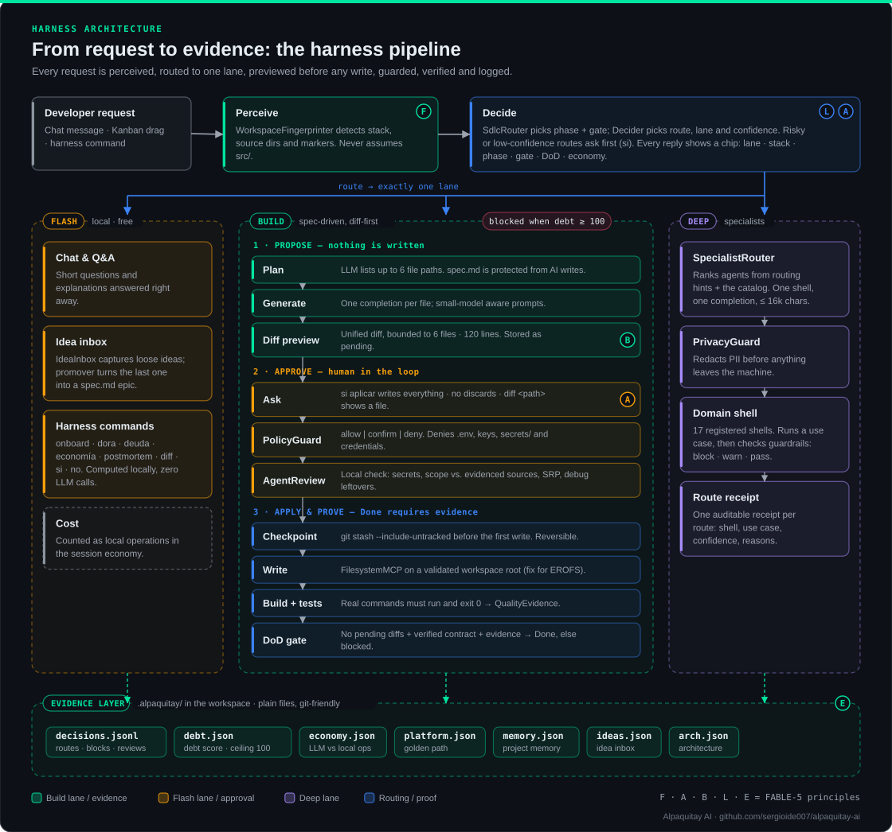
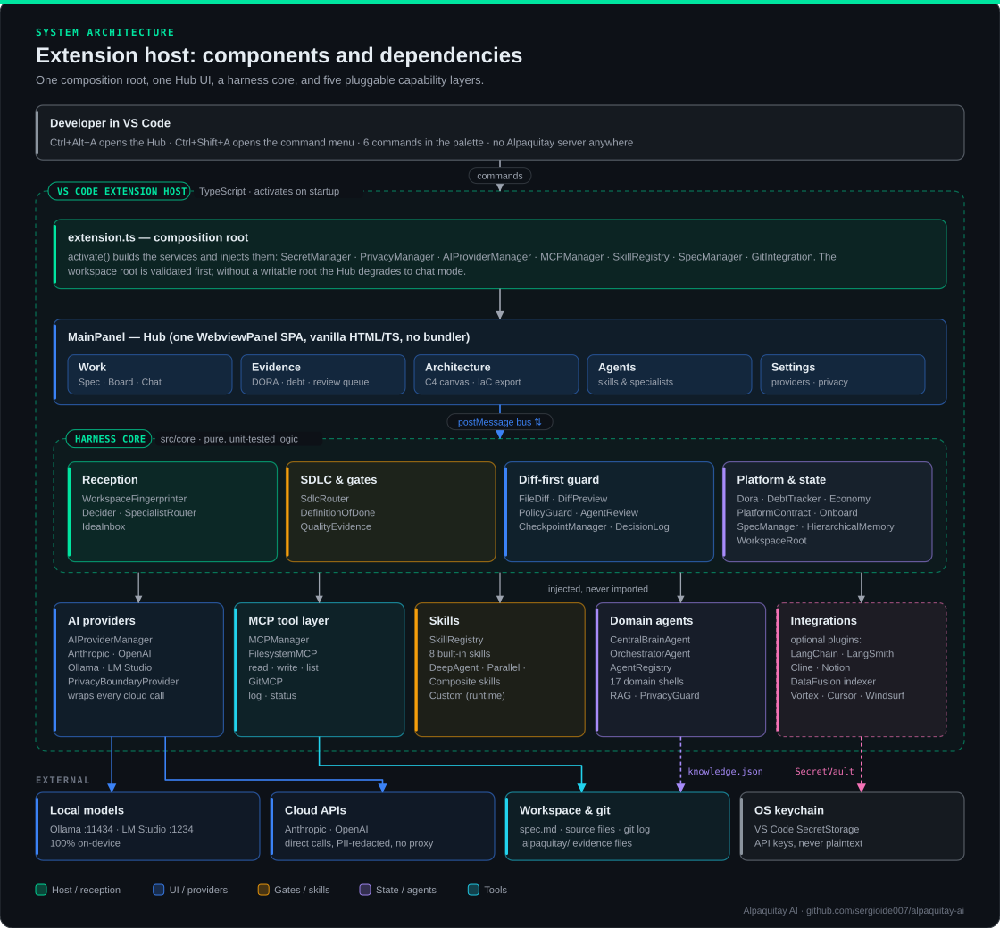
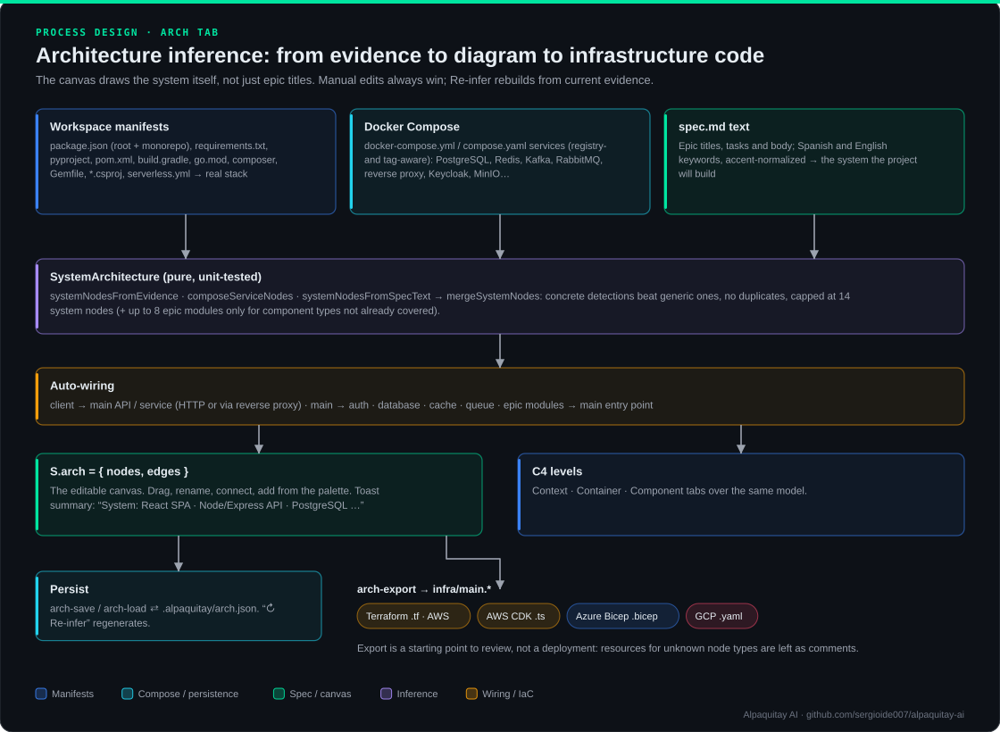
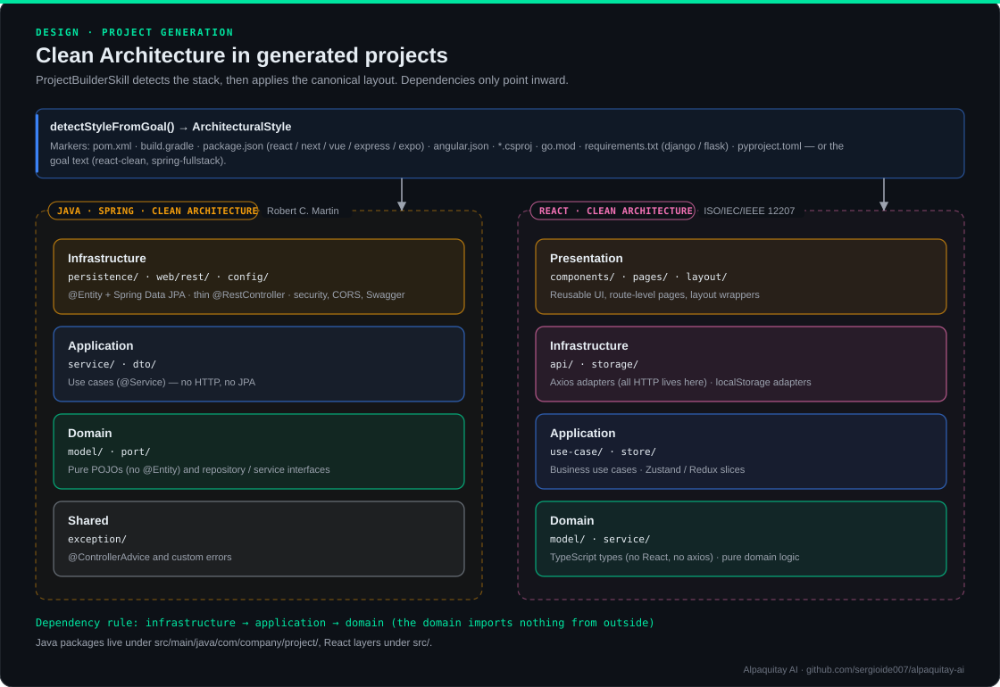

Chapter 13
Architecture diagrams
These are Alpaquitay AI's official diagrams. Click any of them to see it full screen. They are available as SVG (editable) and PNG in docs/diagrams/, generated by the Python scripts in docs/diagrams/src/.
1. The harness pipeline


How a request travels through the harness: the project is perceived, a lane is chosen, the change is previewed, guarded, verified and logged. Explained in How the harness thinks.
2. Inside the extension


The components of the extension host: the composition root, the Hub, the harness core, the capability layers (providers, tools, skills, documents, local engine) and the external systems it talks to.
3. Sequence of an SDD task

What happens between dragging a card to In Progress and it reaching Done. Explained in Work.
4. SDLC gates

The six phases and what each one requires to move on. Explained in How the harness thinks.
5. Providers and the privacy boundary

How the provider is chosen and what happens to your text on each path. Explained in Providers.
6. Specialist orchestration

The central agent (privacy, knowledge retrieval, orchestration and refinement), the orchestrator and the specialist registry. Explained in Agents.
7. Hexagonal specialist

The ports-and-adapters architecture of each specialist: the domain never depends on the infrastructure.
8. Architecture inference


The evidence behind the Architecture tab's diagram. Explained in Architecture.
9. Generated Clean Architecture


The structures the project builder generates for Java Spring and React.
10. Document agent

The Docs tab flow, from reading the format to verifying the written file. Explained in Docs.
11. Local engine

How the model is downloaded, verified, cached and run on your GPU. Explained in Local engine.